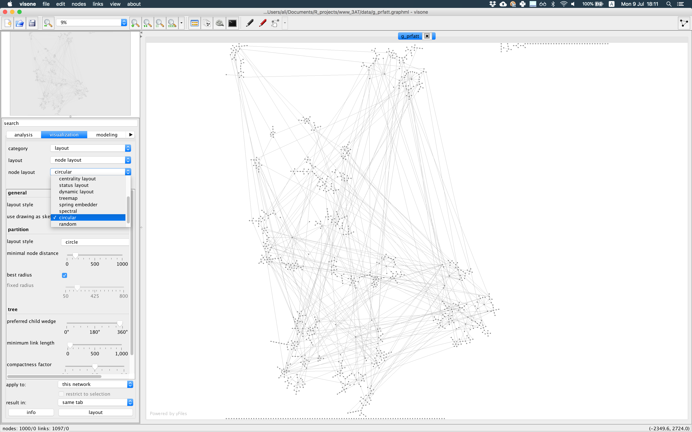
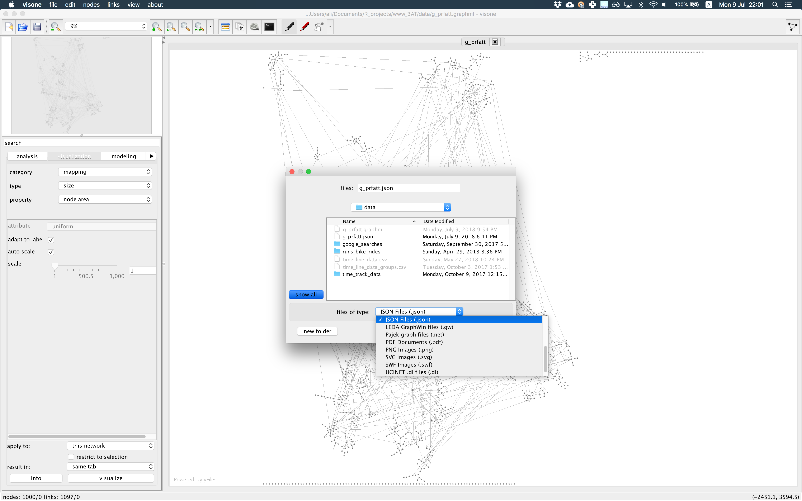
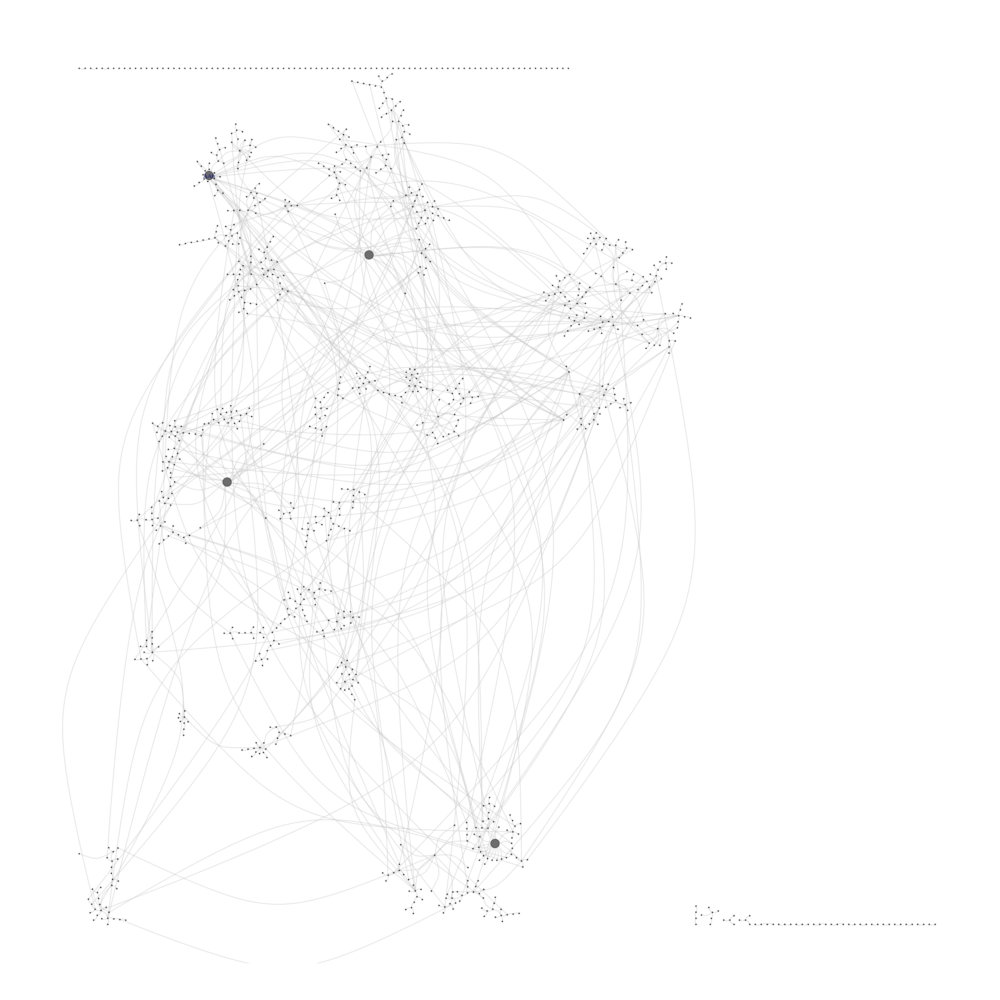
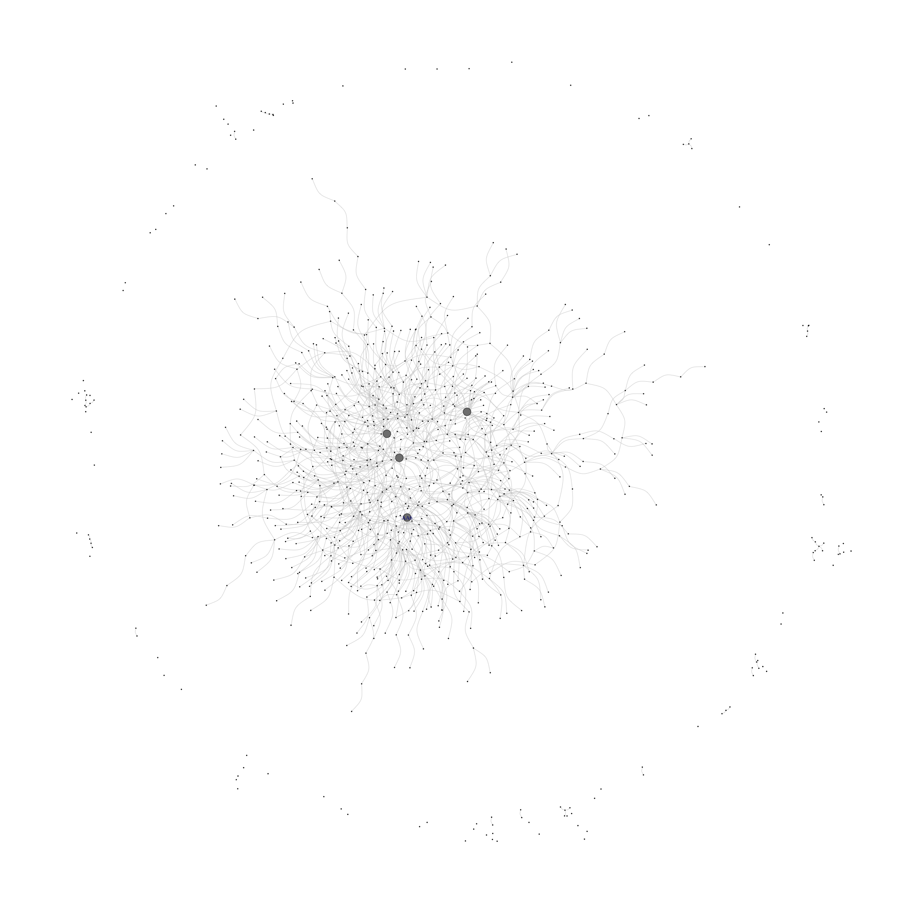

Have you tried to replicate a nice network visualization you achieved once, for a second time to put it in a presentation or manuscript?
What did you do for that?
If you were using a scripting/coding language like R or Python and you had the code saved somewhere, by setting the same seed number and using same graph layout, you could increase your chances to get the same visualization. But, is the quality of visualization what you wanted? How much time do you need to spend to get a nicely laid out graph in R with built-in layouts (e.g., in igraph)?
How many times have you seen amazing visualizations which make you think, wow, this is how I should present the network! I have felt like that a thousand times. Mostly while looking at visualizations from Visone or Gephi. And mainly while working with large scale networks that makes plotting harder and default layouts don’t give interesting/meaningful outputs.
For a while I was trying to find a replicable way to bring Visone or Gephi output into R and integrate it with my report or code which is mainly Rmarkdown. I didn’t want to import a PNG picture, simply because if you change the underlying graph or add/remove attributes, there is no way to replicate the graph. You have to export it from R again. Plot it in an external software, bring it back into Rmarkdown as a PNG file.
Instead, what if we can replicate the graph itself using nice layouts from Visone or Gephi, but reproduced in R?
You might still ask, why?
In case I had modified the graph by sub-setting/adding/removing attributes, I was not able to replicate the visualization with above procedure. In case I could, it was frustrating to get the same quality of visualization since I needed to remember the point & click steps I took! I even went to the Juergen Pfeffer’s workshop on “Visualizing Social Networks. How to Create Meaningful and Compelling Network Drawings” in Sunbelt 2018 in Utrecht to end this frustration, and he and his colleague gave me a tip, try if you can get the result you want by exporting layout coordinates from external software and adding it to layout function in igraph! Turned out, his suggestion was perfect!
R using igraph package (or any other package which exports to graphml or gml formats).graphml file. This format exports all character and numeric attributes you have added which is presented in code chunk below (I build a preferential attachment graph with 1000 nodes, set exemplar names to nodes, export it to graphml):require(knitr)
require(jsonlite)
require(igraph)
set.seed(123)
g_prfatt <- barabasi.game(1000, out.dist = c(.15,.6,.25), directed = FALSE, zero.appeal = 2)
# naming nodes just to show the most prominent ones on plot
V(g_prfatt)$name <- paste0("AA", 1:1000)
# write the graph to external "graphml" file
write.graph(g_prfatt, file = "./data/g_prfatt.graphml", format = c("graphml"))Visone software to draw the network as you want and lay it out the way you want to present it using node and edge attributes and graph layouts from the diverse collection Visone has to offer (this happens only once, so put enough time and get the network vis you wish). I chose Visone because it is fast and works nicely with large graphs. And it was easier for me to learn how to use it! See the photo below.
json file from Visone as shown in the picture below.
The json output, if you open it with a text editor, will look like the text shown below. You see each node has some attributes for ‘x’ and ‘y’ coordinates, ‘color’, and ‘shape’ as you defined in Visone which you can use in plotting step later.
{
"nodes": [
{
"borderColor": "#333333",
"color": "#808080",
"shape": "Ellipse",
"name": "AA1000",
"x": 15.0,
"width": 30.0,
"y": 965.9445326206138,
"id": "1000",
"height": 30.0
},
{
"borderColor": "#333333",
"color": "#808080",
"shape": "Ellipse",
"name": "AA999",
"x": 5485.908442202976,
"width": 30.0,
"y": 1052.9848655627225,
"id": "999",
"height": 30.0
},
Read the exported json file to R with jsonlite package for which you can use sample script presented below. It takes out only “nodes” part of the json as a “data.frame”. In next step you can take “x” and “y” columns which are node coordinates or “color” and other attributes to assign to nodes.
In igraph, using function set_vertex_attr, assign those “x” and “y” coordinates to network object and voila! Your nodes are at exact positions you laid them out in Visone. If you change the network object by removing/adding attributes and/or sub-setting nodes, they are going to stay on the exact same positions so you can present the effect of changes or focal nodes/groups situation after change.
g_prfatt_json <- fromJSON(txt = './data/g_prfatt.json', simplifyDataFrame = T)$nodes
# join author x, y coordinates to network object as attributes
g_prfatt <- set_vertex_attr(graph = g_prfatt, name = "x", index = g_prfatt_json$name, value = g_prfatt_json$x)
g_prfatt <- set_vertex_attr(graph = g_prfatt, name = "y", index = g_prfatt_json$name, value = g_prfatt_json$y)
g_prfatt <- set_vertex_attr(graph = g_prfatt, name = "color", index = g_prfatt_json$name, value = g_prfatt_json$color)
png(filename = "./images/g_prfatt_visone_json.png", width = 2000, height = 2000, units = 'px')
plot.igraph(g_prfatt, vertex.label = ifelse(test = igraph::degree(g_prfatt) > 16, yes = V(g_prfatt)$name, no = NA), vertex.size = ifelse(test = igraph::degree(g_prfatt) > 11, yes = 2, no = 0.2), vertex.color = V(g_prfatt)$color, edge.curved = T, edge.color = "#cccccc")
invisible(dev.off())
include_graphics(path = "./images/g_prfatt_visone_json.png", dpi = 300)
What if we didn’t do all described above? Below you see an example of visualizing the same graph, using built-in layout layout_components from igraph in R. Be the judge of quality yourself, which one could convey a more meaningful message?
png(filename = "./images/g_prfatt_igraph.png", width = 2000, height = 2000, units = 'px')
plot.igraph(g_prfatt, vertex.label = ifelse(test = igraph::degree(g_prfatt) > 16, yes = V(g_prfatt)$name, no = NA), vertex.size = ifelse(test = igraph::degree(g_prfatt) > 11, yes = 2, no = 0.2), vertex.color = g_prfatt_json$color, edge.curved = T, edge.color = "#cccccc", layout = layout_components)
invisible(dev.off())
include_graphics(path = "./images/g_prfatt_igraph.png", dpi = 300)
P.S. If you can calculate node coordinates yourself, you can do it and assign them as node attributes, “x” and “y” simply in R without going through Visone and external plotting steps. Or instead of setting attributes to nodes, just give the coordinates as a two-column matrix to igraph plot function.